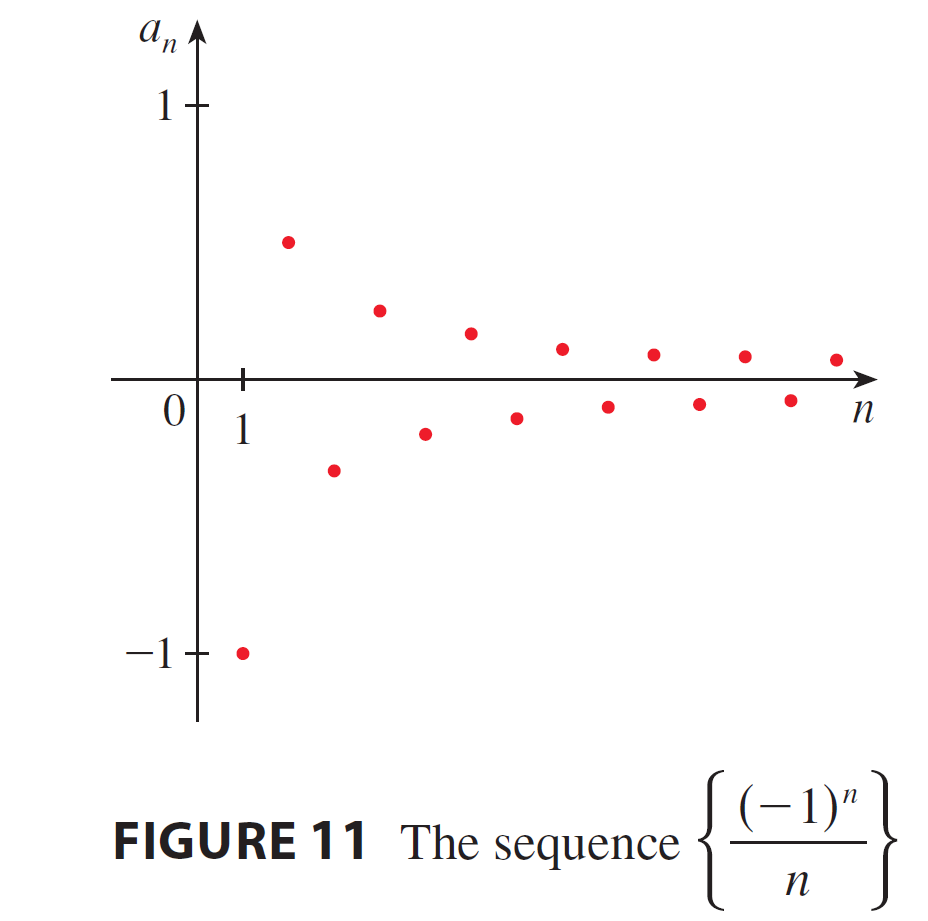

<!DOCTYPE html>
<html lang="zh-TW">
<head>
    <meta charset="UTF-8">
    <meta name="viewport" content="width=device-width, initial-scale=1.0">
    <title>微積分 (2) - 11.1 數列 | Prof. Wu Wen-Chuan</title>
    
    <!-- 1. 核心樣式與庫載入 -->
    <!-- Tailwind CSS (樣式框架) -->
    <script src="https://cdn.tailwindcss.com"></script>
    
    <!-- React & ReactDOM (前端框架) -->
    <script crossorigin src="https://unpkg.com/react@18/umd/react.production.min.js"></script>
    <script crossorigin src="https://unpkg.com/react-dom@18/umd/react-dom.production.min.js"></script>
    
    <!-- Babel (JSX 編譯器) -->
    <script src="https://unpkg.com/@babel/standalone/babel.min.js"></script>

    <!-- KaTeX (數學公式渲染) -->
    <link rel="stylesheet" href="https://cdn.jsdelivr.net/npm/katex@0.16.9/dist/katex.min.css">
    <script src="https://cdn.jsdelivr.net/npm/katex@0.16.9/dist/katex.min.js"></script>
    
    <!-- 自定義樣式 -->
    <style>
        /* 平滑滾動 */
        html { scroll-behavior: smooth; }
        /* 自定義滾動條 */
        ::-webkit-scrollbar { width: 8px; }
        ::-webkit-scrollbar-track { background: #fdf2f8; }
        ::-webkit-scrollbar-thumb { background: #fbcfe8; border-radius: 4px; }
        ::-webkit-scrollbar-thumb:hover { background: #f472b6; }
        /* 數學公式容器樣式 - 允許水平滾動 */
        .math-display { overflow-x: auto; overflow-y: hidden; }
    </style>
</head>
<body class="bg-yellow-50 font-sans text-gray-800 selection:bg-pink-200">
    <div id="root"></div>

    <script type="text/babel">
        const { useState, useEffect, useRef } = React;

        // ==========================================
        // 2. 工具組件 (Utilities)
        // ==========================================

        /**
         * LaTeX 渲染組件
         */
        const Latex = ({ children, block = false, fontSize = '0.9em' }) => {
            const spanRef = useRef(null);

            useEffect(() => {
                if (window.katex && spanRef.current) {
                    try {
                        const content = typeof children === 'string' ? children : '';
                        window.katex.render(content, spanRef.current, {
                            throwOnError: false,
                            displayMode: block,
                        });
                    } catch (e) {
                        console.warn("KaTeX render error", e);
                        if (spanRef.current) spanRef.current.innerText = String(children);
                    }
                }
            }, [children, block]);

            return <span ref={spanRef} style={{ margin: '0 4px', display: block ? 'block' : 'inline-block', fontSize: fontSize }} />;
        };

        // ==========================================
        // 3. UI 子組件 (Sub-components)
        // ==========================================

        const Navbar = ({ t, isMenuOpen, setIsMenuOpen, toggleLang }) => {
            return (
                <nav className="sticky top-0 z-50 w-full bg-white/90 px-6 py-4 shadow-md backdrop-blur-md transition-all">
                    <div className="flex items-center justify-between max-w-7xl mx-auto">
                        <div className="flex flex-col">
                            <h1 className="bg-gradient-to-r from-pink-500 to-purple-500 bg-clip-text text-2xl font-black tracking-tight text-transparent md:text-3xl">
                                {t.title}
                            </h1>
                            <span className="text-base font-medium text-gray-500 md:text-xl">
                                {t.teacher}
                            </span>
                        </div>

                        <div className="hidden items-center gap-6 md:flex">
                            {t.menu.map((item, i) => (
                                <a key={i} href={`#part${i+1}`} className="text-xl font-bold text-gray-600 hover:text-pink-500 transition-colors">{item}</a>
                            ))}
                            <button 
                                onClick={toggleLang}
                                className="flex items-center gap-2 rounded-full bg-purple-100 px-5 py-2 text-lg font-bold text-purple-700 transition-all hover:bg-purple-200 hover:shadow-md active:scale-95"
                            >
                                <svg xmlns="http://www.w3.org/2000/svg" width="20" height="20" viewBox="0 0 24 24" fill="none" stroke="currentColor" strokeWidth="2" strokeLinecap="round" strokeLinejoin="round"><circle cx="12" cy="12" r="10"/><line x1="2" x2="22" y1="12" y2="12"/><path d="M12 2a15.3 15.3 0 0 1 4 10 15.3 15.3 0 0 1-4 10 15.3 15.3 0 0 1-4-10 15.3 15.3 0 0 1 4-10z"/></svg>
                                {t.langBtn}
                            </button>
                        </div>

                        <button 
                            className="rounded-full bg-gray-100 p-2 text-gray-600 md:hidden hover:bg-gray-200"
                            onClick={() => setIsMenuOpen(!isMenuOpen)}
                        >
                            <svg xmlns="http://www.w3.org/2000/svg" width="24" height="24" viewBox="0 0 24 24" fill="none" stroke="currentColor" strokeWidth="2" strokeLinecap="round" strokeLinejoin="round"><line x1="4" x2="20" y1="12" y2="12"/><line x1="4" x2="20" y1="6" y2="6"/><line x1="4" x2="20" y1="18" y2="18"/></svg>
                        </button>
                    </div>

                    {isMenuOpen && (
                        <div className="mt-4 flex flex-col gap-4 border-t border-gray-100 pt-4 md:hidden">
                            {t.menu.map((item, i) => (
                                <a key={i} href={`#part${i+1}`} onClick={() => setIsMenuOpen(false)} className="px-2 py-1 text-lg font-bold text-gray-600">{item}</a>
                            ))}
                            <button 
                                onClick={() => { toggleLang(); setIsMenuOpen(false); }}
                                className="flex w-full items-center justify-center gap-2 rounded-xl bg-purple-100 py-3 font-bold text-purple-700"
                            >
                                <svg xmlns="http://www.w3.org/2000/svg" width="20" height="20" viewBox="0 0 24 24" fill="none" stroke="currentColor" strokeWidth="2" strokeLinecap="round" strokeLinejoin="round"><circle cx="12" cy="12" r="10"/><line x1="2" x2="22" y1="12" y2="12"/><path d="M12 2a15.3 15.3 0 0 1 4 10 15.3 15.3 0 0 1-4 10 15.3 15.3 0 0 1-4-10 15.3 15.3 0 0 1 4-10z"/></svg>
                                {t.langBtn}
                            </button>
                        </div>
                    )}
                </nav>
            );
        };

        const UnitHeader = ({ t }) => (
            <div className="mb-8 text-center animate-in fade-in zoom-in duration-500">
                <h2 className="mb-2 text-4xl font-black text-black md:text-5xl">
                    <span className="mr-3 text-black">{t.unitId}</span>
                    {t.unitTitle}
                </h2>
                <p className="text-2xl font-bold text-gray-500">{t.unitSub}</p>
            </div>
        );

        const Part1 = ({ t }) => (
            <section id="part1" className="scroll-mt-32 rounded-[2rem] bg-pink-100 p-8 shadow-lg shadow-pink-100/50 md:p-12 transition-all hover:shadow-xl">
                <div className="mb-6 flex items-center gap-3">
                    <div className="flex h-12 w-12 items-center justify-center rounded-full bg-white text-pink-500 shadow-sm">
                        <svg xmlns="http://www.w3.org/2000/svg" width="28" height="28" viewBox="0 0 24 24" fill="none" stroke="currentColor" strokeWidth="2" strokeLinecap="round" strokeLinejoin="round"><path d="M2 3h6a4 4 0 0 1 4 4v14a3 3 0 0 0-3-3H2z"/><path d="M22 3h-6a4 4 0 0 0-4 4v14a3 3 0 0 1 3-3h7z"/></svg>
                    </div>
                    <h2 className="text-2xl font-black text-pink-700 md:text-3xl">{t.part1Title}</h2>
                </div>
                
                <div className="space-y-8 rounded-3xl bg-white/60 p-6 md:p-8">
                    <h3 className="text-2xl font-bold text-gray-800">{t.part1Topic}</h3>
                    <div className="text-xl leading-relaxed text-gray-700">{t.part1Desc}</div>

                    {/* 觀念類比區塊 */}
                    <div className="bg-purple-50 py-4 px-6 rounded-2xl border-l-8 border-purple-400">
                        <h4 className="font-bold text-purple-800 text-xl mb-2 flex items-center gap-2">
                            <span>💡</span> {t.analogyTitle}
                        </h4>
                        <div className="text-xl text-gray-700 leading-relaxed">
                            {t.analogyDesc}
                        </div>
                    </div>
                    
                    {/* Definition Block */}
                    <div className="bg-pink-50 py-4 px-6 rounded-2xl border-l-8 border-pink-400">
                        <h4 className="font-bold text-pink-800 text-xl mb-2">{t.part1Step1}</h4>
                        <div className="text-xl text-gray-700 mb-4">{t.part1Step1Desc}</div>
                        <div className="text-center my-4 math-display bg-white/50 p-4 rounded-xl">
                            <Latex block>{'\\displaystyle \\lim_{n \\to \\infty} a_n = L'}</Latex>
                        </div>
                    </div>

                    {/* Theorems Block */}
                    <div className="bg-white p-6 rounded-2xl border-l-8 border-pink-400 shadow-sm">
                        <h4 className="font-bold text-pink-800 text-xl mb-4">{t.part1Step2}</h4>
                        <ul className="space-y-4 text-lg text-gray-700">
                            <li>
                                <span className="font-bold">{t.case1}</span> 
                                <span className="ml-2"><Latex fontSize="0.9em">{'(x \\to n) \\implies \\lim f(x) = L'}</Latex></span>
                            </li>
                            <li>
                                <span className="font-bold">{t.case2}</span> 
                                <span className="ml-2"><Latex fontSize="0.9em">{'a_n \\le b_n \\le c_n \\to L'}</Latex></span>
                            </li>
                            <li>
                                <span className="font-bold">{t.case3}</span> 
                                <span className="ml-2"><Latex fontSize="0.9em">{'\\text{Bounded } + \\text{Monotonic } \\to \\text{Convergent}'}</Latex></span>
                            </li>
                        </ul>
                    </div>
                </div>
            </section>
        );

        const Part2 = ({ t, activeExList, activeExampleId, setActiveExampleId }) => {
            const activeEx = activeExList.find(e => e.id === activeExampleId) || activeExList[0];
            return (
                <section id="part2" className="scroll-mt-32 rounded-[2rem] bg-blue-100 p-8 shadow-lg shadow-blue-100/50 md:p-12 transition-all hover:shadow-xl">
                    <div className="mb-6 flex items-center gap-3">
                        <div className="flex h-12 w-12 items-center justify-center rounded-full bg-white text-blue-500 shadow-sm">
                            <svg xmlns="http://www.w3.org/2000/svg" width="28" height="28" viewBox="0 0 24 24" fill="none" stroke="currentColor" strokeWidth="2" strokeLinecap="round" strokeLinejoin="round"><rect width="16" height="20" x="4" y="2" rx="2"/><line x1="8" x2="16" y1="6" y2="6"/><line x1="16" x2="16" y1="14" y2="18"/><path d="M16 10h.01"/><path d="M12 10h.01"/><path d="M8 10h.01"/><path d="M12 14h.01"/><path d="M8 14h.01"/><path d="M12 18h.01"/><path d="M8 18h.01"/></svg>
                        </div>
                        <h2 className="text-2xl font-black text-blue-700 md:text-3xl">{t.part2Title}</h2>
                    </div>

                    <div className="mb-8 flex flex-wrap gap-3">
                        {activeExList.map((ex) => (
                            <button
                                key={ex.id}
                                onClick={() => setActiveExampleId(ex.id)}
                                className={`rounded-full px-6 py-3 text-lg font-bold transition-all shadow-sm ${
                                    activeExampleId === ex.id
                                        ? "bg-blue-600 text-white shadow-lg shadow-blue-500/30 scale-105"
                                        : "bg-white text-blue-600 hover:bg-blue-50 hover:scale-105"
                                }`}
                            >
                                {t.btnLabel} {ex.id}
                            </button>
                        ))}
                    </div>

                    <div className="space-y-8">
                        <div key={activeEx.id} className="rounded-3xl bg-white/60 p-6 md:p-8 shadow-inner">
                            <div className="border-b-2 border-blue-200 pb-6 mb-6">
                                <h3 className="text-2xl font-bold text-blue-800 mb-3">{activeEx.title}</h3>
                                <div className="flex flex-wrap items-center gap-4 text-lg font-bold text-gray-800">
                                    <span className="bg-blue-100 text-blue-800 px-3 py-1 rounded-lg">{t.btnLabel} {activeEx.id}:</span>
                                    <div className="rounded-xl bg-white px-6 py-3 text-blue-600 shadow-md ring-1 ring-blue-100 math-display">
                                        <Latex block fontSize="0.9em">{activeEx.math}</Latex>
                                    </div>
                                </div>
                            </div>

                            <div className="space-y-6">
                                {activeEx.steps.map((step, idx) => (
                                    <div key={idx} className="group rounded-2xl bg-white p-6 ring-2 ring-blue-200 transition-all hover:shadow-lg hover:ring-blue-400">
                                        <h4 className="mb-3 flex items-center gap-3 text-lg font-bold text-blue-700">
                                            <span className="flex h-8 w-8 items-center justify-center rounded-full bg-blue-600 text-sm text-white font-black">
                                                {idx + 1}
                                            </span>
                                            {step.t}
                                        </h4>
                                        <div className="mb-4 text-lg text-gray-600 pl-11">{step.d}</div>
                                        <div className="bg-blue-50 p-4 text-center text-lg font-bold text-blue-900 rounded-xl math-display border border-blue-100">
                                            <Latex block fontSize="0.9em">{step.m}</Latex>
                                        </div>
                                    </div>
                                ))}
                            </div>
                        </div>
                    </div>
                </section>
            );
        };

        const Part3 = ({ t, activePracList, activePracticeId, setActivePracticeId }) => {
            const activePrac = activePracList.find(p => p.id === activePracticeId) || activePracList[0];
            return (
                <section id="part3" className="scroll-mt-32 rounded-[2rem] bg-green-100 p-8 shadow-lg shadow-green-100/50 md:p-12 transition-all hover:shadow-xl">
                    <div className="flex items-center gap-3 mb-6">
                        <div className="flex h-12 w-12 items-center justify-center rounded-full bg-white text-green-500 shadow-sm">
                            <svg xmlns="http://www.w3.org/2000/svg" width="28" height="28" viewBox="0 0 24 24" fill="none" stroke="currentColor" strokeWidth="2" strokeLinecap="round" strokeLinejoin="round"><path d="m12 19 7-7 3 3-7 7-3-3z"/><path d="m18 13-1.5-7.5L2 2l3.5 14.5L13 18l5-5z"/><path d="m2 2 7.586 7.586"/><circle cx="11" cy="11" r="2"/></svg>
                        </div>
                        <h2 className="text-2xl font-black text-green-700 md:text-3xl">{t.part3Title}</h2>
                    </div>

                    <div className="mb-8 flex flex-wrap gap-3">
                        {activePracList.map((p) => (
                            <button
                                key={p.id}
                                onClick={() => setActivePracticeId(p.id)}
                                className={`rounded-full px-6 py-3 text-lg font-bold transition-all shadow-sm ${
                                    activePracticeId === p.id
                                        ? "bg-green-600 text-white shadow-lg shadow-green-500/30 scale-105"
                                        : "bg-white text-green-600 hover:bg-green-50 hover:scale-105"
                                }`}
                            >
                                {t.btnPracticeLabel} {p.id}
                            </button>
                        ))}
                    </div>

                    <div className="mt-4 rounded-3xl bg-white/60 p-6 md:p-8">
                        <p className="mb-8 text-xl text-gray-700 font-medium">{t.part3Desc}</p>
                        
                        <div key={activePrac.id} className="rounded-3xl bg-white p-6 md:p-8 shadow-md border-2 border-green-300 animate-in fade-in slide-in-from-bottom-4 duration-300">
                            <div className="border-b-2 border-green-100 pb-6 mb-6">
                                <h3 className="text-2xl font-bold text-green-800 mb-3">{activePrac.title}</h3>
                                <div className="flex flex-wrap items-center gap-4 text-lg font-bold text-gray-800">
                                    <span className="bg-green-100 text-green-800 px-3 py-1 rounded-lg">{t.btnPracticeLabel} {activePrac.id}:</span>
                                    <div className="rounded-xl bg-white px-6 py-3 text-green-700 shadow-md ring-1 ring-green-100 math-display">
                                        <Latex block fontSize="0.9em">{activePrac.math}</Latex>
                                    </div>
                                </div>
                            </div>

                            <div className="mt-6 space-y-6">
                                {activePrac.steps.map((step, idx) => (
                                    <div key={idx} className="group rounded-2xl bg-white p-6 ring-2 ring-green-200 transition-all hover:shadow-lg hover:ring-green-400">
                                        <h4 className="mb-3 flex items-center gap-3 text-lg font-bold text-green-600">
                                            <span className="flex h-8 w-8 items-center justify-center rounded-full bg-green-600 text-sm text-white font-black">
                                                {idx + 1}
                                            </span>
                                            {step.t}
                                        </h4>
                                        <div className="mb-4 text-lg text-gray-600 pl-11">{step.d}</div>
                                        <div className="bg-green-50 p-4 text-center text-lg font-bold text-green-800 rounded-xl math-display border border-green-100">
                                            <Latex block fontSize="0.9em">{step.m}</Latex>
                                        </div>
                                    </div>
                                ))}
                            </div>
                        </div>
                    </div>
                </section>
            );
        };

        const App = () => {
            const [lang, setLang] = useState('zh');
            const [katexLoaded, setKatexLoaded] = useState(false);
            const [isMenuOpen, setIsMenuOpen] = useState(false);
            const [activeExampleId, setActiveExampleId] = useState(4);
            const [activePracticeId, setActivePracticeId] = useState(1);

            useEffect(() => {
                const checkKatex = setInterval(() => {
                    if (window.katex) {
                        setKatexLoaded(true);
                        clearInterval(checkKatex);
                    }
                }, 100);
                setTimeout(() => setKatexLoaded(true), 3000); 
                return () => clearInterval(checkKatex);
            }, []);

            const toggleLang = () => {
                setLang(prev => prev === 'zh' ? 'en' : 'zh');
                setIsMenuOpen(false);
            };

            const t = DATA[lang];
            const activeExList = EXAMPLES_DATA[lang];
            const activePracList = PRACTICE_DATA[lang];

            if (!katexLoaded) {
                return (
                    <div className="flex h-screen w-full items-center justify-center bg-yellow-50 text-xl font-bold text-gray-500">
                        Loading Math Engine...
                    </div>
                );
            }

            return (
                <div className="min-h-screen bg-yellow-50 font-sans text-gray-800 selection:bg-pink-200">
                    <Navbar t={t} isMenuOpen={isMenuOpen} setIsMenuOpen={setIsMenuOpen} toggleLang={toggleLang} />
                    <main className="mx-auto mt-16 flex max-w-6xl flex-col gap-16 px-4 pb-20">
                        <UnitHeader t={t} />
                        <Part1 t={t} />
                        <Part2 t={t} activeExList={activeExList} activeExampleId={activeExampleId} setActiveExampleId={setActiveExampleId} />
                        <Part3 t={t} activePracList={activePracList} activePracticeId={activePracticeId} setActivePracticeId={setActivePracticeId} />
                    </main>
                    <footer className="mt-12 bg-white py-12 text-center text-gray-400 border-t border-gray-100">
                        <p className="text-lg">© 2025 Calculus (2) Course. Prof. Wu Wen-Chuan.</p>
                        <p className="mt-2 text-sm">Designed for Student Success</p>
                    </footer>
                </div>
            );
        };

        // ==========================================
        // 4. 資料定義 (Data)
        // ==========================================

        const DATA = {
            zh: {
                title: "微積分 (2)",
                teacher: "授課老師: 吳文銓 (Prof. Wu Wen-Chuan)",
                menu: ["核心概念", "範例說明", "動手練習"],
                langBtn: "English",
                unitId: "11.1",
                unitTitle: "數列",
                unitSub: "Sequences",
                part1Title: "第一部分：核心概念",
                part1Topic: "無窮數列的極限與收斂性",
                part1Desc: (
                    <span>
                        數列 <Latex>{'\\{a_n\\}'}</Latex> 是一組按順序排列的數字。如果當 <Latex>{'n'}</Latex> 趨向無限大時，<Latex>{'a_n'}</Latex> 趨近於一個有限數值 <Latex>{'L'}</Latex>，我們稱該數列「收斂 (Convergent)」；否則稱為「發散 (Divergent)」。
                    </span>
                ),
                analogyTitle: "觀念類比：無限長的樓梯",
                analogyDesc: (
                    <span>
                        想像你正在走一個無限長的樓梯。
                        <br/><b>收斂：</b> 隨著你走得越遠，每一階的高度變化越來越小，最後你感覺自己停留在某個特定高度。
                        <br/><b>發散：</b> 你要麼一直往上爬到雲端（<Latex>{'\\infty'}</Latex>），要麼在兩層樓之間永無止盡地跳上跳下（震盪）。
                    </span>
                ),
                part1Step1: "定義 (Definition)",
                part1Step1Desc: (
                    <span>
                        若 <Latex>{'\\lim_{n \\to \\infty} a_n = L'}</Latex> 存在且有限，則收斂；否則發散。
                    </span>
                ),
                part1Step2: "重要定理 (Theorems)",
                case1: "函數關聯:",
                case2: "夾擠定理:",
                case3: "單調有界:",
                part2Title: "第二部分：範例說明",
                part3Title: "第三部分：動手練習",
                part3Desc: "請嘗試解決以下題目，並參考詳細步驟核對：",
                btnLabel: "例題",
                btnPracticeLabel: "練習題"
            },
            en: {
                title: "Calculus (2)",
                teacher: "Instructor: Prof. Wu Wen-Chuan",
                menu: ["Concepts", "Examples", "Practice"],
                langBtn: "繁體中文",
                unitId: "11.1",
                unitTitle: "Sequences",
                unitSub: "Sequences",
                part1Title: "Part 1: Core Concepts",
                part1Topic: "Limits and Convergence of Infinite Sequences",
                part1Desc: (
                    <span>
                        A sequence <Latex>{'\\{a_n\\}'}</Latex> is an ordered list of numbers. If <Latex>{'a_n'}</Latex> approaches a finite number <Latex>{'L'}</Latex> as <Latex>{'n'}</Latex> goes to infinity, it "Converges"; otherwise, it "Diverges".
                    </span>
                ),
                analogyTitle: "Analogy: Infinite Staircase",
                analogyDesc: (
                    <span>
                        Imagine walking on an infinitely long staircase.
                        <br/><b>Convergent:</b> As you go further, the step height changes less and less, and you settle at a specific altitude.
                        <br/><b>Divergent:</b> You either climb forever to the clouds or jump up and down endlessly between two floors.
                    </span>
                ),
                part1Step1: "Definition",
                part1Step1Desc: (
                    <span>
                        If <Latex>{'\\lim_{n \\to \\infty} a_n = L'}</Latex> exists, it converges.
                    </span>
                ),
                part1Step2: "Theorems",
                case1: "Function Relation:",
                case2: "Squeeze Thm:",
                case3: "Monotonic Bounded:",
                part2Title: "Part 2: Examples",
                part3Title: "Part 3: Practice",
                part3Desc: "Solve the problems and check the detailed steps below:",
                btnLabel: "Ex",
                btnPracticeLabel: "Q"
            }
        };

        const EXAMPLES_DATA = {
            zh: [
                {
                    id: 4, label: "Ex 4", title: "極限計算 (P.729)",
                    math: "\\displaystyle a_n = \\frac{n}{n+1}",
                    steps: [
                        { t: "Step 1: 觀察最高次項 (Check Degree)", d: (<span>分子與分母的最高次項皆為 <Latex>{'n'}</Latex>。</span>), m: "\\displaystyle \\text{Degree} = 1" },
                        { t: "Step 2: 同除以 n (Divide)", d: (<span>分子分母同時除以 <Latex>{'n'}</Latex>。</span>), m: "\\displaystyle \\lim_{n \\to \\infty} \\frac{1}{1 + 1/n}" },
                        { t: "Step 3: 取極限 (Limit)", d: (<span>當 <Latex>{'n \\to \\infty'}</Latex> 時，<Latex>{'1/n \\to 0'}</Latex>。</span>), m: "\\displaystyle \\frac{1}{1 + 0} = 1" },
                        { t: "Step 4: 結論 (Conclusion)", d: (<span>極限為有限數值，故收斂。</span>), m: "\\displaystyle \\text{Converges to } 1" }
                    ]
                },
                {
                    id: 5, label: "Ex 5", title: "根號型數列 (P.729)",
                    math: "\\displaystyle a_n = \\frac{n}{\\sqrt{10+n}}",
                    steps: [
                        { t: "Step 1: 調整形式 (Rewrite)", d: (<span>將 <Latex>{'n'}</Latex> 移入分母的根號內（變成 <Latex>{'n^2'}</Latex>），或同除以 <Latex>{'n'}</Latex>。</span>), m: "\\displaystyle \\frac{n}{\\sqrt{n(10/n + 1)}} = \\sqrt{n} \\frac{1}{\\sqrt{10/n+1}}" },
                        { t: "Step 2: 分析極限 (Analyze)", d: (<span>當 <Latex>{'n \\to \\infty'}</Latex>，<Latex>{'\\sqrt{n} \\to \\infty'}</Latex>，後項趨近 1。</span>), m: "\\displaystyle \\infty \\cdot 1 = \\infty" },
                        { t: "Step 3: 結論 (Conclusion)", d: (<span>極限為無窮大，故發散。</span>), m: "\\displaystyle \\text{Divergent}" }
                    ]
                },
                {
                    id: 6, label: "Ex 6", title: "羅必達法則 (P.730)",
                    math: "\\displaystyle a_n = \\frac{\\ln n}{n}",
                    steps: [
                        { t: "Step 1: 轉為函數 (Function Form)", d: (<span>考慮連續函數 <Latex>{'f(x) = \\frac{\\ln x}{x}'}</Latex>。</span>), m: "\\displaystyle \\lim_{x \\to \\infty} \\frac{\\ln x}{x}" },
                        { t: "Step 2: 檢查型態 (Check Form)", d: (<span><Latex>{'\\ln \\infty = \\infty'}</Latex>，型態為 <Latex>{'\\infty/\\infty'}</Latex>。</span>), m: "\\displaystyle \\text{Indeterminate Form}" },
                        { t: "Step 3: 羅必達 (L'Hopital)", d: (<span>分子分母分別微分。</span>), m: "\\displaystyle \\lim_{x \\to \\infty} \\frac{1/x}{1} = \\lim_{x \\to \\infty} \\frac{1}{x}" },
                        { t: "Step 4: 結果 (Result)", d: (<span>極限為 0。</span>), m: "\\displaystyle 0 \\implies \\text{Converges to } 0" }
                    ]
                },
                {
                    id: 7, label: "Ex 7", title: "震盪數列 (P.730)",
                    math: "\\displaystyle a_n = (-1)^n",
                    steps: [
                        { t: "Step 1: 列出項 (List Terms)", d: (<span>列出前幾項觀察規律。</span>), m: "\\displaystyle -1, 1, -1, 1, -1, \\dots" },
                        { t: "Step 2: 分析行為 (Analyze)", d: (<span>數值在 -1 與 1 之間跳動，不會趨近單一數值。</span>), m: "\\displaystyle \\text{Oscillates}" },
                        { t: "Step 3: 結論 (Conclusion)", d: (<span>極限不存在。 <br/>  </span>), m: "\\displaystyle \\text{Divergent}" }
                    ]
                },
                {
                    id: 8, label: "Ex 8", title: "絕對值定理 (P.730)",
                    math: "\\displaystyle a_n = \\frac{(-1)^n}{n}",
                    steps: [
                        { t: "Step 1: 取絕對值 (Absolute Value)", d: (<span>考慮 <Latex>{'|a_n|'}</Latex> 的極限。</span>), m: "\\displaystyle \\lim_{n \\to \\infty} \\left| \\frac{(-1)^n}{n} \\right| = \\lim_{n \\to \\infty} \\frac{1}{n}" },
                        { t: "Step 2: 求極限 (Limit)", d: (<span><Latex>{'1/n'}</Latex> 趨近於 0。</span>), m: "\\displaystyle 0" },
                        { t: "Step 3: 應用定理 (Theorem)", d: (<span>若 <Latex>{'|a_n| \\to 0'}</Latex>，則 <Latex>{'a_n \\to 0'}</Latex>。 <br/>  </span>), m: "\\displaystyle \\text{Converges to } 0" }
                    ]
                },
                {
                    id: 13, label: "Ex 13", title: "遞減數列 (P.732)",
                    math: "\\displaystyle a_n = \\frac{n}{n^2+1}",
                    steps: [
                        { t: "Step 1: 轉為函數 (Function)", d: (<span>考慮 <Latex>{'f(x) = \\frac{x}{x^2+1}'}</Latex>。</span>), m: "\\displaystyle f(x) = \\frac{x}{x^2+1}" },
                        { t: "Step 2: 求導數 (Derivative)", d: (<span>使用除法微分公式。</span>), m: "\\displaystyle f'(x) = \\frac{1(x^2+1) - x(2x)}{(x^2+1)^2} = \\frac{1-x^2}{(x^2+1)^2}" },
                        { t: "Step 3: 判斷符號 (Sign)", d: (<span>當 <Latex>{'x > 1'}</Latex> 時，分子 <Latex>{'1-x^2 < 0'}</Latex>。</span>), m: "\\displaystyle f'(x) < 0 \\text{ for } x > 1" },
                        { t: "Step 4: 結論 (Conclusion)", d: (<span>因為導數為負，函數遞減，故數列遞減。</span>), m: "\\displaystyle \\text{Decreasing Sequence}" }
                    ]
                }
            ],
            en: [
                {
                    id: 4, label: "Ex 4", title: "Limit Calculation (P.729)",
                    math: "\\displaystyle a_n = \\frac{n}{n+1}",
                    steps: [
                        { t: "Step 1: Check Degree", d: (<span>Both num and denom have degree 1.</span>), m: "\\displaystyle \\text{Degree} = 1" },
                        { t: "Step 2: Divide by n", d: (<span>Simplify the fraction.</span>), m: "\\displaystyle \\lim_{n \\to \\infty} \\frac{1}{1 + 1/n}" },
                        { t: "Step 3: Take Limit", d: (<span>1/n goes to 0.</span>), m: "\\displaystyle \\frac{1}{1+0} = 1" },
                        { t: "Step 4: Conclusion", d: (<span>Converges.</span>), m: "\\displaystyle \\text{Converges to } 1" }
                    ]
                },
                {
                    id: 5, label: "Ex 5", title: "Radical Sequence (P.729)",
                    math: "\\displaystyle a_n = \\frac{n}{\\sqrt{10+n}}",
                    steps: [
                        { t: "Step 1: Rewrite", d: (<span>Divide by <Latex>{'\\sqrt{n}'}</Latex> terms.</span>), m: "\\displaystyle \\sqrt{n} \\cdot \\frac{1}{\\sqrt{10/n+1}}" },
                        { t: "Step 2: Analyze", d: (<span>Root n goes to infinity.</span>), m: "\\displaystyle \\infty \\cdot 1 = \\infty" },
                        { t: "Step 3: Conclusion", d: (<span>Limit is infinite.</span>), m: "\\displaystyle \\text{Divergent}" }
                    ]
                },
                {
                    id: 6, label: "Ex 6", title: "L'Hopital's Rule (P.730)",
                    math: "\\displaystyle a_n = \\frac{\\ln n}{n}",
                    steps: [
                        { t: "Step 1: Function Form", d: (<span>Consider continuous f(x).</span>), m: "\\displaystyle \\lim_{x \\to \\infty} \\frac{\\ln x}{x}" },
                        { t: "Step 2: Check Form", d: (<span>Indeterminate form.</span>), m: "\\displaystyle \\infty/\\infty" },
                        { t: "Step 3: L'Hopital", d: (<span>Differentiate top and bottom.</span>), m: "\\displaystyle \\lim \\frac{1/x}{1} = 0" },
                        { t: "Step 4: Result", d: (<span>Sequence follows function.</span>), m: "\\displaystyle \\text{Converges to } 0" }
                    ]
                },
                {
                    id: 7, label: "Ex 7", title: "Oscillating (P.730)",
                    math: "\\displaystyle a_n = (-1)^n",
                    steps: [
                        { t: "Step 1: List Terms", d: (<span>Observe the pattern.</span>), m: "\\displaystyle -1, 1, -1, 1 \\dots" },
                        { t: "Step 2: Analyze", d: (<span>Jumps between values.</span>), m: "\\displaystyle \\text{Oscillates}" },
                        { t: "Step 3: Conclusion", d: (<span>No unique limit. <br/>  </span>), m: "\\displaystyle \\text{Divergent}" }
                    ]
                },
                {
                    id: 8, label: "Ex 8", title: "Absolute Value Thm (P.730)",
                    math: "\\displaystyle a_n = \\frac{(-1)^n}{n}",
                    steps: [
                        { t: "Step 1: Absolute Value", d: (<span>Consider abs(an).</span>), m: "\\displaystyle |a_n| = \\frac{1}{n}" },
                        { t: "Step 2: Limit", d: (<span>Limit is 0.</span>), m: "\\displaystyle \\lim \\frac{1}{n} = 0" },
                        { t: "Step 3: Theorem", d: (<span>Implies original limit is 0. <br/>  </span>), m: "\\displaystyle \\text{Converges to } 0" }
                    ]
                },
                {
                    id: 13, label: "Ex 13", title: "Decreasing (P.732)",
                    math: "\\displaystyle a_n = \\frac{n}{n^2+1}",
                    steps: [
                        { t: "Step 1: Function", d: (<span>Use f(x).</span>), m: "\\displaystyle f(x) = \\frac{x}{x^2+1}" },
                        { t: "Step 2: Derivative", d: (<span>Quotient rule.</span>), m: "\\displaystyle f'(x) = \\frac{1-x^2}{(x^2+1)^2}" },
                        { t: "Step 3: Sign", d: (<span>Negative for x > 1.</span>), m: "\\displaystyle f'(x) < 0" },
                        { t: "Step 4: Conclusion", d: (<span>Function decreases.</span>), m: "\\displaystyle \\text{Decreasing}" }
                    ]
                }
            ]
        };

        const PRACTICE_DATA = {
            zh: [
                { 
                    id: 1, label: "Q 1", title: "練習題 1 (極限計算)", math: "\\displaystyle a_n = \\frac{4n^2 - 3n}{2n^2 + 1}", 
                    steps: [
                        { t: "Step 1: 找出最高次項 (Highest Degree)", d: (<span>分子分母最高次皆為 <Latex>{'n^2'}</Latex>。</span>), m: "\\displaystyle \\text{Degree} = 2" },
                        { t: "Step 2: 同除以 n^2 (Divide)", d: (<span>每一項除以 <Latex>{'n^2'}</Latex>。</span>), m: "\\displaystyle \\lim_{n \\to \\infty} \\frac{4 - 3/n}{2 + 1/n^2}" },
                        { t: "Step 3: 取極限 (Limit)", d: (<span>分母含 <Latex>{'n'}</Latex> 的項趨近 0。</span>), m: "\\displaystyle \\frac{4-0}{2+0} = 2" },
                        { t: "Step 4: 結果 (Result)", d: (<span>收斂於 2。</span>), m: "\\displaystyle \\text{Converges to } 2" }
                    ]
                },
                { 
                    id: 2, label: "Q 2", title: "練習題 2 (夾擠定理)", math: "\\displaystyle a_n = \\frac{\\sin n}{n}", 
                    steps: [
                        { t: "Step 1: 分析範圍 (Bounds)", d: (<span>正弦函數介於 -1 與 1 之間。</span>), m: "\\displaystyle -1 \\le \\sin n \\le 1" },
                        { t: "Step 2: 建立不等式 (Inequality)", d: (<span>同除以 <Latex>{'n'}</Latex>。</span>), m: "\\displaystyle \\frac{-1}{n} \\le \\frac{\\sin n}{n} \\le \\frac{1}{n}" },
                        { t: "Step 3: 兩側極限 (Side Limits)", d: (<span>左右兩項極限皆為 0。</span>), m: "\\displaystyle \\lim \\frac{-1}{n} = 0, \\quad \\lim \\frac{1}{n} = 0" },
                        { t: "Step 4: 結論 (Squeeze)", d: (<span>根據夾擠定理，中間項極限亦為 0。</span>), m: "\\displaystyle \\text{Limit} = 0" }
                    ]
                },
                { 
                    id: 3, label: "Q 3", title: "練習題 3 (羅必達)", math: "\\displaystyle a_n = n e^{-n}", 
                    steps: [
                        { t: "Step 1: 改寫式子 (Rewrite)", d: (<span>寫成有理分式形式。</span>), m: "\\displaystyle \\frac{n}{e^n}" },
                        { t: "Step 2: 轉為函數 (Function)", d: (<span><Latex>{'x \\to \\infty'}</Latex> 時為 <Latex>{'\\infty/\\infty'}</Latex>。</span>), m: "\\displaystyle \\lim_{x \\to \\infty} \\frac{x}{e^x}" },
                        { t: "Step 3: 羅必達 (L'Hopital)", d: (<span>微分。</span>), m: "\\displaystyle \\lim_{x \\to \\infty} \\frac{1}{e^x}" },
                        { t: "Step 4: 結果 (Result)", d: (<span>分母趨向無窮大，值為 0。</span>), m: "\\displaystyle 0" }
                    ]
                },
                { 
                    id: 4, label: "Q 4", title: "練習題 4 (單調性)", math: "\\displaystyle a_n = \\frac{3}{n+5}", 
                    steps: [
                        { t: "Step 1: 比較前後項 (Compare)", d: (<span>寫出下一項 <Latex>{'a_{n+1}'}</Latex>。</span>), m: "\\displaystyle a_{n+1} = \\frac{3}{n+6}" },
                        { t: "Step 2: 分母分析 (Denominator)", d: (<span>分母 <Latex>{'n+6 > n+5'}</Latex>。</span>), m: "\\displaystyle \\text{Larger denominator}" },
                        { t: "Step 3: 數值大小 (Value)", d: (<span>分母越大，數值越小。</span>), m: "\\displaystyle a_{n+1} < a_n" },
                        { t: "Step 4: 結論 (Conclusion)", d: (<span>數列遞減。</span>), m: "\\displaystyle \\text{Decreasing}" }
                    ]
                },
                { 
                    id: 5, label: "Q 5", title: "練習題 5 (幾何數列)", math: "\\displaystyle a_n = (0.86)^n", 
                    steps: [
                        { t: "Step 1: 識別類型 (Identify)", d: (<span>形式為 <Latex>{'r^n'}</Latex>，其中 <Latex>{'r=0.86'}</Latex>。</span>), m: "\\displaystyle r = 0.86" },
                        { t: "Step 2: 應用定理 (Theorem)", d: (<span>若 <Latex>{'|r| < 1'}</Latex>，則 <Latex>{'r^n \\to 0'}</Latex>。</span>), m: "\\displaystyle |0.86| &lt; 1" },
                        { t: "Step 3: 結論 (Conclusion)", d: (<span>極限為 0，收斂。</span>), m: "\\displaystyle \\text{Converges to } 0" }
                    ]
                }
            ],
            en: [
                { 
                    id: 1, label: "Q 1", title: "Practice 1 (Limit)", math: "\\displaystyle a_n = \\frac{4n^2 - 3n}{2n^2 + 1}", 
                    steps: [
                        { t: "Step 1: High Degree", d: (<span>Both are <Latex>{'n^2'}</Latex>.</span>), m: "\\displaystyle \\text{Degree } 2" },
                        { t: "Step 2: Divide", d: (<span>Divide by <Latex>{'n^2'}</Latex>.</span>), m: "\\displaystyle \\frac{4 - 3/n}{2 + 1/n^2}" },
                        { t: "Step 3: Limit", d: (<span>Small terms go to 0.</span>), m: "\\displaystyle \\frac{4}{2} = 2" },
                        { t: "Step 4: Result", d: (<span>Converges.</span>), m: "\\displaystyle 2" }
                    ]
                },
                { 
                    id: 2, label: "Q 2", title: "Practice 2 (Squeeze)", math: "\\displaystyle a_n = \\frac{\\sin n}{n}", 
                    steps: [
                        { t: "Step 1: Bounds", d: (<span>Sin is between -1 and 1.</span>), m: "\\displaystyle -1 \\le \\sin n \\le 1" },
                        { t: "Step 2: Inequality", d: (<span>Divide by n.</span>), m: "\\displaystyle \\frac{-1}{n} \\le a_n \\le \\frac{1}{n}" },
                        { t: "Step 3: Limits", d: (<span>Sides go to 0.</span>), m: "\\displaystyle 0" },
                        { t: "Step 4: Conclusion", d: (<span>Middle goes to 0.</span>), m: "\\displaystyle 0" }
                    ]
                },
                { 
                    id: 3, label: "Q 3", title: "Practice 3 (L'Hopital)", math: "\\displaystyle a_n = n e^{-n}", 
                    steps: [
                        { t: "Step 1: Rewrite", d: (<span>Fraction form.</span>), m: "\\displaystyle \\frac{n}{e^n}" },
                        { t: "Step 2: Check", d: (<span>Indeterminate.</span>), m: "\\displaystyle \\infty/\\infty" },
                        { t: "Step 3: Differentiate", d: (<span>Top and bottom.</span>), m: "\\displaystyle \\frac{1}{e^n}" },
                        { t: "Step 4: Result", d: (<span>Goes to 0.</span>), m: "\\displaystyle 0" }
                    ]
                },
                { 
                    id: 4, label: "Q 4", title: "Practice 4 (Monotonic)", math: "\\displaystyle a_n = \\frac{3}{n+5}", 
                    steps: [
                        { t: "Step 1: Next Term", d: (<span>n becomes n+1.</span>), m: "\\displaystyle \\frac{3}{n+6}" },
                        { t: "Step 2: Compare", d: (<span>Denom increases.</span>), m: "\\displaystyle n+6 > n+5" },
                        { t: "Step 3: Value", d: (<span>Fraction decreases.</span>), m: "\\displaystyle a_{n+1} < a_n" },
                        { t: "Step 4: Result", d: (<span>Decreasing.</span>), m: "\\displaystyle \\text{Decreasing}" }
                    ]
                },
                { 
                    id: 5, label: "Q 5", title: "Practice 5 (Geometric)", math: "\\displaystyle a_n = (0.86)^n", 
                    steps: [
                        { t: "Step 1: Identify", d: (<span>Geometric seq.</span>), m: "\\displaystyle r = 0.86" },
                        { t: "Step 2: Theorem", d: (<span>|r| &lt; 1.</span>), m: "\\displaystyle 0.86 < 1" },
                        { t: "Step 3: Result", d: (<span>Converges.</span>), m: "\\displaystyle 0" }
                    ]
                }
            ]
        };

        const root = ReactDOM.createRoot(document.getElementById('root'));
        root.render(<App />);
    </script>
</body>
</html>